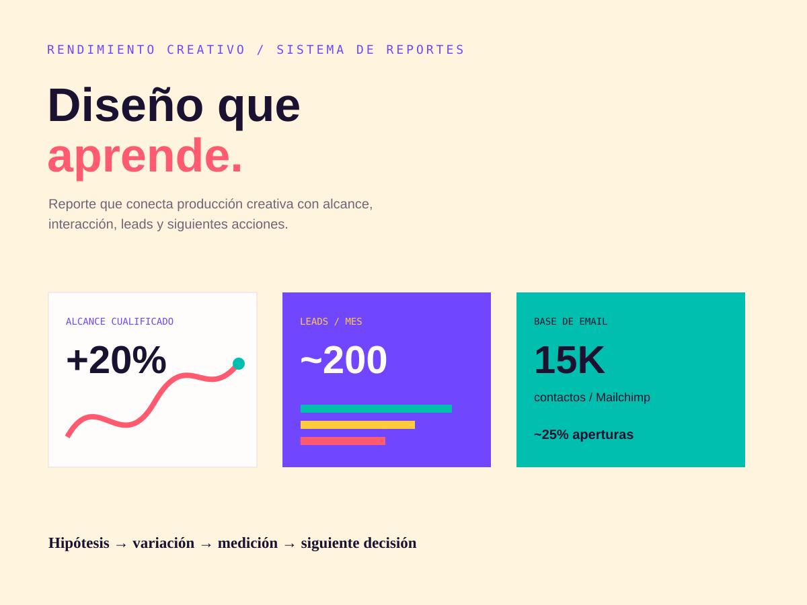

Identidades que pueden viajar.
Logotipos, paletas, tipografía, dirección de arte y reglas para mantener consistencia en web, redes, presentaciones y email.
Identidad visualDirección de arteTipografía
ALINE PEÑA COLUNGA / DISEÑADORA GRÁFICA
Creo sistemas visuales, campañas digitales y experiencias web centradas en las personas, conectando dirección creativa con objetivos reales de negocio.

01 / PERFIL
Mi formación en Ingeniería en Sistemas me ayuda a ordenar información compleja, mientras que mi experiencia en marketing conecta el diseño con las personas, los canales y los resultados.
Logotipos, paletas, tipografía, dirección de arte y reglas para mantener consistencia en web, redes, presentaciones y email.
Piezas para campañas, redes sociales, anuncios, correos, presentaciones e infografías adaptadas para producción.
Arquitectura de información, user flows, wireframes, prototipos en Figma, diseño responsive y landing pages enfocadas en la siguiente acción.
Planeación de contenido, SEO, analítica, formularios, conexiones con CRM y reportes para convertir decisiones creativas en aprendizajes.
02 / PROYECTOS SELECCIONADOS
Abre cada caso para revisar la dirección visual, las piezas y la manera en que conecto las decisiones de diseño con la audiencia y el canal.

Dirección de marca para una empresa de infraestructura energética: concepto de logotipo, lenguaje visual, LinkedIn, redes, email, presentación y aplicaciones HSE.
Una identidad compacta que comunica estructura, claridad y pensamiento de diseño interdisciplinario.

Dirección de campaña para una empresa de seguridad y control: monitoreo, videovigilancia, control de acceso y segmentos de clientes.

Dirección visual para automatización, cámaras, control de acceso, showroom y presentación de productos para e-commerce.

Arquitectura de información, user flows, wireframes, prototipos en Figma y layouts responsive para experiencias digitales prácticas.

Sistema de producción para redes, email y campañas con jerarquía consistente, control de versiones y llamados a la acción por canal.

Dirección de reportes que conecta las variaciones creativas con alcance, interacción, generación de leads, email y la siguiente decisión.
03 / CARPETA DE EVIDENCIA
Un reclutador puede revisar la pieza y también el razonamiento: brief, jerarquía, herramientas, producción, medición y entrega.
04 / PROCESO DE DISEÑO
Un proceso repetible me permite avanzar rápido sin perder intención, consistencia ni control de calidad.
Leer el brief, la audiencia, el objetivo, el canal y las restricciones. Identificar qué debe comprenderse primero.
Organizar información, definir jerarquía, mapear el flujo y elegir el formato antes de estilizar.
Construir direcciones visuales con referencias, tipografía, color, composición y alternativas enfocadas.
Crear el sistema, las variaciones, las adaptaciones responsive y los archivos listos para exportar.
Comprobar accesibilidad básica, especificaciones técnicas, consistencia de marca y señales de rendimiento.
05 / CAPACIDADES
El diseño gráfico es el centro. Marketing, UX y web hacen que el trabajo sea útil en un entorno de producción real.
06 / HERRAMIENTAS + PALABRAS CLAVE
Los niveles están separados de forma honesta: las herramientas de experiencia práctica no se mezclan con las que estoy desarrollando profesionalmente.
07 / IMPACTO
Alcance profesional documentado en marketing, web y producción digital. Las cifras describen mi experiencia y no garantizan resultados para un nuevo cliente.
Palabras clave: diseño gráfico, branding, identidad visual, dirección de arte, tipografía, composición, redes sociales, campañas digitales, diseño de email, banners web, Figma, Photoshop, Canva, WordPress, Elementor, HTML5, CSS3, JavaScript, PHP, GA4, SEO, accesibilidad y control de calidad.
08 / TRABAJEMOS JUNTOS
Para diseño gráfico, campañas digitales, branding, UX/UI o proyectos web, aporto estrategia, producción y comprensión técnica en una misma mesa.
{kind=link}